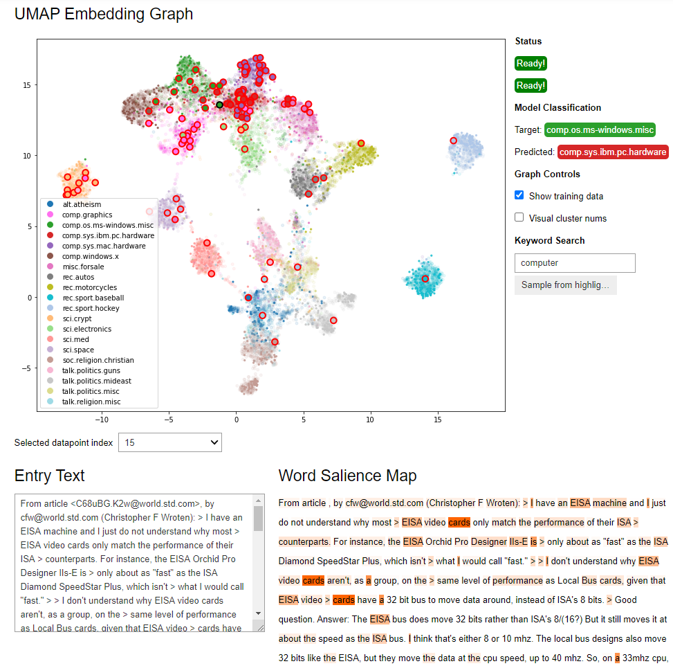

TX2 Documentation¶
Welcome to TX2! This library is intended to aid in the explorability and explainability of transformer classification networks, or transformer language models with sequence classification heads. The basic function of this library is to take a trained transformer and test/train dataset and produce an ipywidget dashboard as seen in the screenshot below, which can be displayed in a jupyter notebook or jupyter lab.
NOTE: Currently this library’s implementation is partially torch-dependent, and so will not work with tensorflow/keras models - we hope to address this limitation in the future!
Usage